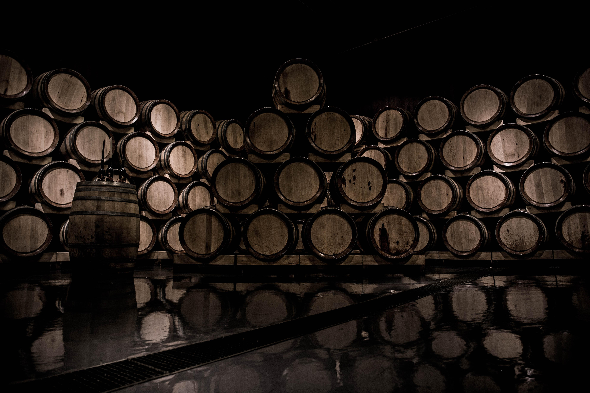

CLUB DE AMIGOS
El lugar donde nos reunimos quienes compartimos
el placer de una buena copa
NUESTROS VINOS

Vinos Blancos
De color amarillo pálido con reflejos dorados. Es un vino de gran intensidad aromática, con notas que recuerdan a flores blancas, rosas y frutos tropicales. Su acidez provoca una placentera sensación de frescura. Por su caudal aromático, este torrontés combina perfectamente con pescados, frutos de mar y comidas bien sazonadas.

Vinos Rosados
Este rosado está elaborado con uvas especialmente seleccionadas por su expresión y franqueza. De un vivo color rosado con matices violetas, impacta en la nariz con una explosión de aromas a guindas y frambuesas frescas, que se complementan con delicadas notas florales de violetas y rosas. En boca entrega una fresca acidez y perfecto equilibrio que otorga un agradable y placentero final. Ideal para acompañar frutos de mar y pastas.

Vinos Tintos
De un color profundo, nuestro Malbec revela un exquisito bouquet a ahumados, frutas rojas, negras y vainilla. Sus 12 meses de crianza en roble francés le aportan complejidad y estructura en boca, con taninos suaves y aterciopelados, y un largo e inolvidable final. Este varietal es el reflejo de la perfecta combinación entre la fruta y la madera.
NOSOTROS
VINO es una bodega fundada por un grupo de pioneros que comparten la visión del inmenso potencial de los viñedos del sureste de Argentina. La bodega, de estilo colonial, recibe a los turistas todo el año. El recorrido contempla cada etapa de la elaboración del vino. Se observan desde tanques de acero inoxidable, la crianza y añejamiento en barricas de roble hasta antiguas cubas de madera. Además se pueden caminar entre los viñedos, visitar la planta de fraccionamiento, y realizar una degustación de vinos en el Museo.
NUESTRA FINCA
En la visita se puede caminar entre los viñedos y se recorre el interior por pasarelas aéreas desde las que se visualiza cada área de producción así como el paisaje exterior. Al final de la visita hay una degustación y la posibilidad de comprar nuestros Vinos. Tambien puedes asociarte al Club de Amigos donde podras disfrutar de nuestras Catas-eventos y obtener descuentos increibles.

VINOS
Vino Blanco
Variedad: 80% Malvar, 13% Torrontés, 7% Moscatel de grano menudo. Vendimia: uva recogida a mano en cajas de 15 kg. Elaboración: Maceración en contacto con los hollejos a 5-7 °C de temperatura durante 4 horas previamente a la fermentación. Temperatura de fermentación entre 14 y 16 °C. Crianza: sobre lías finas en depósito de acero inoxidable tras la fermentación. Temperatura de consumo recomendada: entre 8° y 10°C Grado alcoholico: 13% vol. NOTAS DE CATA Color: Amarillo pálido con ligeros reflejos verdosos, de intensidad media alta y aspecto limpio y brillante, con lagrima densa. Nariz: Fresca, de intensidad media alta, con aromas a fruta blanca y ligeros toques azahar y a albahaca. Boca: Buena entrada, voluminosa y de sensación untuosa y persistente. Buena acidez, con recuerdos cítricos y a níspero.

Vino Tinto
Variedad: 65% Tempranillo, 20% Cabernet Sauvignon, 13% Syrah, 2% Merlot Vendimia: uva recogida a mano en cajas de 15 kg. Elaboración: mesa de selección en la propia bodega. Tanques de acero inoxidable. Fermentación con temperatura controlada 22-23ºC, duración 10 dias. Envejecimiento: 6 meses en barricas de roble francés de 500L. Embotellado: sin filtrar Temperatura de consumo recomendada: entre 16° and 18°C Grado alcoholico: 14% vol. NOTAS DE CATA Color: rojo cereza, limpio, brillante, capa media-alta Nariz: fruta fresca, roja, balsámica con notas de anís. Boca: buena entrada, larga, amplia y voluminosa. Persistente y con ligeros matices de vainilla.
Vino Rosado
Variedad: 50% Garnacha, 50% Cabernet Sauvignon Vendimia: uva recogida a mano en cajas de 15 kg. Elaboración: Maceración en contacto con los hollejos a 5-7 °C de temperatura durante 24-48 horas previamente a la fermentación. Temperatura de fermentación entre 14 y 16 °C. Temperatura de consumo recomendada: entre 8° y 10°C Grado alcoholico: 14% vol. NOTAS DE CATA Color: color piel de cebolla, de intensidad media y aspecto limpio y brillante Nariz: fresca y sutil, presenta aromas florales y a fresa. De lenta y constante evolución aumenta su expresividad en la copa. Boca: Entrada fresca, agradable, con buena acidez y fruta roja. Buena persistencia y final intenso.